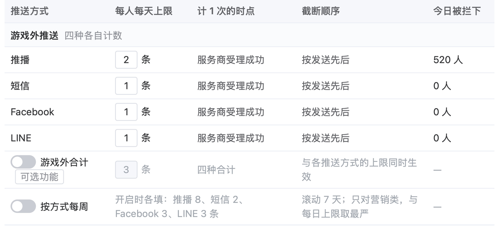
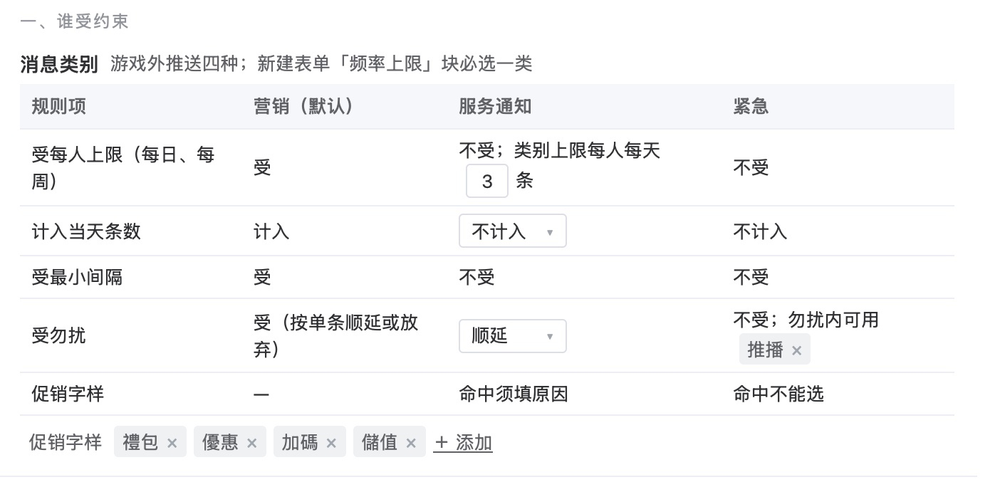
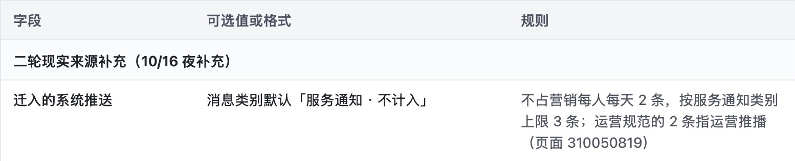

已判 0 / 12 条 · 判完了
弹窗标签推送系统 · 2026-10-16 · 第 9 份产出 · 取舍类
第 9 份｜迁入后台的系统推送默认归「服务通知」而不占营销推播每人每天 2 条，这样定可以吗？
按下面 12 条判断依据逐条看 AI 评审的结论（每条只答「符合」或「不符合」），你只判同意或不同意；也可补缺的依据。
「系统推送」＝游戏服务端写死、按固定时刻或玩家状态自动发的 34 种推播（如每天 17:00 提醒身上有占星石的玩家）；「运营推播」＝运营排的固定推播与限时活动推播。
01判断依据：6 条，从规范原意、玩家打扰、业内做法到改回代价
事实与依据每天 2 条管的是谁
1运营规范「每天推播不超过两条」管的是运营排的推播，不包括服务端按条件自动发的提醒
对象 运营固定推播、限时活动推播；服务端自动提醒|出处 运营规范原文（营运 9/14「平台用户流量运营思路」）；系统推送规格（2025-12「推播优化-需求说明」）
规范与规格原文怎么写
- 运营规范 · 固定推播：按低 V、中 V、高 V、至尊卡四层，周一至周四、周五至周日各在 20:00 推不同活动
- 运营规范 · 额外推播：
固定推撥之外，可以根據針對限時活動做額外推撥，但額外推撥需要滿足2個觸發條件（任務條件和時間條件），整體推撥次數必須控制，不能循環推撥
- 运营规范 · 条数：
推撥數量每日不能超過兩條
规范原文
- 系统推送规格：9 个活动条件推播，各按「固定时刻＋本人状态」发，如每天 17:00 身上有占星石的玩家、21:00 限时任务有奖励可领的玩家；规格未写每天条数 规格原文
我们需求对应的部分
频率上限 › 字段表「迁入的系统推送」一行
- 需求文档「截断先后」：运营规范的 2 条指运营推播；系统推送另有固定时刻（17:00、20:00、21:00、次日 11:00）
- 运营自己新建的按行为营销提醒按哪类计，列为待运营确认
AI 评审：否 原文未排除自动提醒；额外推播的任务+时间条件与系统推送同型，整体次数须控制
你判：
影响面与程度一天最多收几条
2迁入后，一位玩家一天收到的推播仍有明确的总上限，运营在频率上限页看得到、压得低
对象 全体收推播的玩家|出处 你定的：10/12「每种渠道每人每日上限，合计上限列为可选」；业内做法：OneSignal、Airship、Braze
我们原型对应的部分

频率上限 › 每人每天上限（游戏外推送部分）
- 现在：游戏外推送四种都没有每人每天上限
- 迁入后：推播营销 2 条＋服务通知 3 条，一位玩家一天最多 5 条；服务通知 3 条按推播、短信、Facebook、LINE 四种合计
- 同类合并：信箱多笔奖励快过期只发 1 条；多个排行榜掉榜只发 1 条
- 要压到更少：调服务通知上限（1–99）或开「游戏外合计」
- 需求写推播行下显示
每人每天最多 5 条推播：营销 2＋服务通知 3
；原型这一行目前没有这句
AI 评审：否 需求有营销2+服务3=5条，但原型p11推播行只显示2条，未显示最多5条
你判：
业内对照分开计还是合起来计
3业内主流推送平台把交易／服务类消息放在营销条数之外单独处理，和我们「服务通知不占营销 2 条」的做法一致
对象 消息类别的计数规则|出处 业内做法：Braze、Airship、OneSignal
业内顶尖产品怎么做
- Braze：频控规则可只管带某标签的活动；文档例：全部推播每周不超过 3 条，同时带 promotional（促销）标签的每周不超过 2 条。接口发送的活动「常为交易类」，可设不受频控；不受频控的活动默认也不计入上限 Braze 文档
- Airship：邮件上限只管商业（营销）邮件；推播上限可对账号提醒、突发新闻等重要消息单条设「忽略上限」 Airship 文档
- OneSignal：不按类别区分，频控覆盖全部推播；单条可关频控，但关了的仍计入上限 OneSignal 文档
我们原型对应的部分

频率上限 › 消息类别
营销受每人上限并计入；服务通知不受营销上限，另按类别上限每人每天 3 条，计入当天条数可选（默认不计入）；紧急不受。迁入的系统推送默认「服务通知 · 不计入」。
AI 评审：是 Braze促销标签另设上限、Airship只限商业邮件，与消息类别表一致
你判：
业内对照内容算不算服务类
4迁入的系统推送按内容算得上服务／交易类（关于玩家本人的账号、交易或已得奖励），不是活动或礼包推广
对象 34 种系统推送|出处 业内做法：Airship、苹果、谷歌
业内顶尖产品怎么做
- Airship：交易类＝促成用户已同意的交易，或告知进行中的交易（例：订单确认、密码重置、账户余额）；商业类＝广告或推广产品、服务 Airship 文档
- 苹果 · 人机界面指南：「时效性」通知只用于直接影响本人、需立即处理的信息，例账号安全问题、包裹送达；不得用于营销；营销、促销通知须用户明确同意 苹果文档
- 苹果 · App 审核指南 4.5.4：推播用于促销或直接营销，须用户在 App 内明确同意，并提供退出方式 苹果文档
- 谷歌 · Play 数据安全：「开发者通知」＝关于 App 或开发者的消息，例重要安全更新；「广告或营销」＝推广产品或服务的推送 谷歌文档
- 谷歌 · Android：每种通知类型建一个通知渠道，用户可逐个渠道关闭 Android 文档
我们需求对应的部分
- 活动或礼包开始、结束前后（5 种）：Boss 战开启、红包狂欢开始、活动鱼机开打、尊爵礼包上架等
- 到期前仍未完成（6 种）：活动奖励信件过期
別讓獎勵睡在信箱裡
、金银满盆未领取、满购礼包到期、限时加码礼包未购买、保留座即将到期等
- 每日定点＋本人状态（14 种）：机会与命运（17:00 有占星石）、发财金（20:00 可领）、限时任务（21:00 有奖励未领）等
- 可领或解锁时（7 种）：发财金冷却结束、新手礼包解锁、独享礼包解锁、延时福袋解锁等；另有排行榜掉榜、月月抽升级各 1 种
- 「服务通知」用途栏写：补偿到账、维护预告、账号绑定结果、奖励发错更正；迁入的系统推送
为避免占营销 2 条而用本类
- 文案含「禮包」等促销字样的，迁入时运营填一次原因「系统活动提醒」；「限时加码礼包未购买」一项归营销
- 对照：运营规范里 20:00 固定推播（营销）的内容例：提醒玩家账户还有金币小玛莉的金币、机会与命运占星石
- 推播发得到的人＝装 App 且开启通知；需求里没有单独的「接收营销推播」同意
AI 评审：否 尊爵礼包上架、红包狂欢开始等属活动/礼包推广，34种仅1种标营销
你判：
影响面与程度该到的提醒会不会被挡
5奖励快过期这类本人提醒被服务通知每天 3 条的上限拦下时，运营当天知道，并能对单条放行
对象 本人奖励到期、未领提醒|出处 业内做法：Braze、Airship
业内顶尖产品怎么做
- Braze：有些活动（如交易类消息）希望始终送达用户，可对单个活动设不受频控 Braze 文档
- Airship：建议对账号提醒等重要消息单条设「忽略上限」 Airship 文档
- 被上限拦下后主动告警：上列两家文档未写
我们需求对应的部分
- 服务通知到上限记「频率上限拦下」，按推播、短信、Facebook、LINE 四种合计
- 需求例：当天 09:00 已收补偿短信 1 则；17:00 两条系统推送照发后服务通知 3／3；21:00 限时任务提醒被拦
- 告警：服务通知或紧急的单条推送，被拦占受众 5% 以上且不少于 50 人次即告警，每 15 分钟检测
- 单条可勾「本条不受频率上限」，选计入方式并填原因
AI 评审：是 告警第9条「重要推送被拦」每15分钟检测；单条可勾「本条不受频率上限」
你判：
可逆性定错了怎么改
6之后要改成「营销」或调条数，只改后台设置即可，不需研发改版
对象 迁入的系统推送、频率上限设置|出处 改回代价：需求文档「频率上限」「消息类别」
改回「营销」会怎样
- 系统推送与运营推播共用营销每人每天 2 条，按发送先后截断，不预留额度
- 需求文档原例：上午两条定时推播用满 2 条时，晚上的礼包快到期提醒被拦下
- 系统推送固定在 17:00、20:00、21:00、次日 11:00 发；运营固定推播在 20:00
我们需求对应的部分
- 消息类别是每条推送的字段，迁入后运营可逐条改；迁入时的「服务通知 · 不计入」是建议默认值
- 服务通知上限（1–99）、计入／不计入可改；「游戏外合计」可开
- 改频率上限时，确认框按近 7 天估算每天多（少）拦下多少人；可设到期自动恢复
AI 评审：是 消息类别逐条可改，服务通知上限、计入方式、游戏外合计均在频率上限页设
你判：
业内做法都已打开官方文档核对；运营规范与系统推送规格取自 Confluence 原页，10/16 核对。
02按评审维度补齐的 6 条依据：选项与推荐、开发量、数据统计、名称、多余内容、理由按目标三层
按评审维度表补齐；每条小标前半是所属维度。
取舍成立写没写出几种计法和推荐
7这个决定写出了有实质差别的选项（计入营销每天 2 条／单独计并设服务通知上限／单独计不设上限），并写明推荐与理由
对象 频率上限页「迁入的系统推送」一行；需求文档「迁入的系统推送默认设置」|出处 写作标准「候选方案之间等权并列，且须有实质差别」；汇报格式「推荐：必须有」
依据的标准怎么写
- 写作标准 · 方案与决策：给出几个方案，由决策者拍板；候选方案之间等权并列，且须有实质差别
- 写作标准 · 方案与决策：不冲突的事不列为待决；短期与长期是同一方案的两部分
- 汇报格式 · 要你定的事：选项写成封闭选项，每个写清具体做法；推荐必须有，先自己想清楚答案；附理由
我们对应的部分
- 频率上限页该行（截图见第 1 条）：消息类别默认「服务通知 · 不计入」；「不占营销每人每天 2 条，按服务通知类别上限 3 条」
- 需求文档「迁入的系统推送默认设置」：消息类别建议默认值「服务通知 · 不计入」；依据「运营规范的『每天推播不超过两条』指运营推播……系统推送另有固定时刻」
- 需求文档待确认清单：「本文按消息类别分开计……请确认运营新建的按行为营销提醒是否仍按营销计」
- 「计入营销 2 条」「单独计不设上限」并列成选项、各写做法：我们这里没有
AI 评审：否 只给了「服务通知·不计入」一个默认值，另外两种计法没有作为并列选项写出做法
你判：
成本依据两种计法各改哪里、属哪一层开发量
8两种计法各要改哪几处（频率上限计数、消息类别字段、截断先后）已写明，并标出各自的开发量层级（现有功能可做／小改动／较大开发）
对象 消息类别、服务通知上限、迁入时的默认值|出处 你定的：方案写明「每项改动是现有功能可做还是需开发、开发量多大」，开发量分层（现有配置、小改动、较大开发）照常写；业内做法：Intercom
业内顶尖产品怎么做
- Intercom RICE 排序法：「投入」按人月估，即一人一个月的工作量；算产品、设计、研发全部成员的时间；粗估取整数，远小于一个月的记 0.5 Intercom 文章
- 本项目的写法：当前阶段只标开发量层级，人周粗估与分端任务拆分是研发评审的产出
我们对应的部分
- 范围分级总表 · 每人每天上限、勿扰、消息类别：成本层级「中」、本期必要；理由「消息类别是迁入系统推送不占营销额度的前提」
- 范围分级总表 · 目录扩展（含 34 种系统推送整体迁入及其默认设置）：成本层级「大」、建议可延后；理由写「服务端＋三端客户端」
- 成本层级的含义：产品初判，小＝单端、一人周内，中＝两端或 1–3 人周，大＝三端以上或依赖外部团队发版；以研发评审估的工时为准
- 任务「迁入的系统推送默认设置」（服务端）：工时「研发评审填」
- 两种计法分别改哪几处、各属哪一层：我们这里没有
AI 评审：否 只写了选定做法，两种计法各改哪几处、各属哪层开发量都没写
你判：
方向一致归服务通知后还统不统计
9系统推送归服务通知后，其发送、到达、点击仍进入数据看板统计，不因不计入营销条数而不统计
对象 迁入的系统推送的数据|出处 你定的：「推送看发送、到达、点击」
依据的标准怎么写
- 你定的 · 衡量：建成标准、验收、衡量、分组对照只看曝光和点击——弹窗看曝光、点击；推送看发送、到达、点击
- 你定的 · 推送分两层：游戏外推送（推播、短信、Facebook、LINE）玩家不在游戏里也收得到，数据看发送、到达、点击
我们对应的部分
- 需求文档 · 活动与事件目录的数据改动：「游戏内、游戏外推送数据加『按项目』筛选；系统推送按模板 × 项目汇总」
- 需求文档「推播单日最多条数」：「触达与打扰页的每人每天推播分布按消息类别分列」
- 原型数据看板 · 人均收到条数：当天全部已发送条数（含服务通知、紧急与不计入上限的）÷当天至少收到 1 条的玩家数
- 原型数据看板各页：未出现「系统推送」字样
AI 评审：是 需求文档「活动与事件目录」一节的看板行写明系统推送按模板×项目汇总，看板统计发送、到达、点击
你判：
措辞与指代三类推送说没说清包含哪些
10「服务通知」「营销推播」「系统推送」第一次出现时写明各包含哪些推送，34 种系统推送有清单可查
对象 频率上限页该行；需求文档「频率上限与勿扰」一节|出处 写作标准「上位词与下位词第一次同时出现时说明包含」「用数量指代一组内容时，在同一处写出成员」
依据的标准怎么写
- 写作标准 · 措辞：同一事物全文只用一个名字；上位词与下位词（推送与推播）第一次同时出现时说明包含关系
- 写作标准 · 结构：用数量或名称指代一组内容时，在同一处写出成员；成员太多放不下的，写出构成并指明完整清单在哪
我们对应的部分
- 频率上限页该行：字段名「迁入的系统推送」；规则「不占营销每人每天 2 条，按服务通知类别上限 3 条；运营规范的 2 条指运营推播」
- 需求文档消息类别表「用途」：营销＝活动、礼包、召回；服务通知＝补偿到账、维护预告、账号绑定结果、奖励发错更正，以及迁入的系统推送（活动奖励、排行榜、礼包提醒）
- 需求文档「截断先后」：「系统推送另有固定时刻，9 个活动条件推播在 17:00、20:00、21:00、次日 11:00」；「运营的固定推播与活动推播为营销」
- 34 种清单：需求文档「34 种系统推送对照」表，按对应模板分组列序号与名称
- 需求文档术语表：没有「系统推送」「服务通知」「运营推播」「消息类别」
AI 评审：否 系统推送首次出现处没有说明含哪些、没有指向 34 种对照表，术语表也没有收录
你判：
无多余内容规则行里有没有论证和过程话
11频率上限页「迁入的系统推送」一行和需求文档频率上限一节的相关规则只写规则与默认值，没有论证过程和工作过程用语
对象 频率上限页该行；需求文档「截断先后」「消息类别」|出处 写作标准「要删掉的内容」
依据的标准怎么写
- 要删：已被决策者否定或经论证不成立的选项与推导；等待决策的候选项（包括不推荐的）保留并等权呈现
- 要删：过程痕迹与元信息，如评审、上级、版本沿革、与研发的沟通过程
- 不在此列：给读者的推荐、需求文档的修改记录
我们对应的部分

原型 › 频率上限 › 字段表
- 需求文档「截断先后」第二点：「（10/16 夜补充）现实依据：运营规范『每天推播不超过两条』指运营推播（Jira 二轮 页面 310050819）；系统推送另有固定时刻，9 个活动条件推播在 17:00、20:00、21:00、次日 11:00（页面 115605505）。按已有消息类别区分：迁入的系统推送建议默认值为『服务通知 · 不计入』……」
- 需求文档消息类别表「用途」：「（10/16 夜补充）迁入的系统推送（活动奖励、排行榜、礼包提醒，4.2.6）为避免占营销 2 条而用本类」
AI 评审：否 原型分组标题和需求文档「频率上限与勿扰」一节都有「夜补充」、版本号改动标注和现实依据论证
你判：
取舍成立推荐理由按近、中、远三层
12推荐「服务通知不占营销 2 条」的理由按近→中→远判断，依据是本期交付与运营规范，没有用活跃、付费这类平台业绩作理由
对象 频率上限页「迁入的系统推送」一行；需求文档「迁入的系统推送默认设置」；夜间简报「我自行决定的事」一表|出处 你定的：工作原则「目标分三层，冲突时按近 → 中 → 远判断」
依据的标准怎么写
- 工作原则：目标分三层，冲突时按近 → 中 → 远判断。近＝本期要交的东西；中＝主管这一期的交付；远＝平台业绩。远目标对范围的异议写成提案交主管，主管定之前照常做完主管要的交付
- 起因（9/29）：早先的方案用业绩把主管要的五类人群、标签需求、推送需求一件件论证掉了
我们对应的部分
- 频率上限页「迁入的系统推送」一行：「不占营销每人每天 2 条，按服务通知类别上限 3 条；运营规范的 2 条指运营推播」
- 需求文档「迁入的系统推送默认设置」消息类别一行的依据：「运营规范的『每天推播不超过两条』指运营推播……系统推送另有固定时刻」；「『限时加码礼包未购买』除外……消息类别为营销，计入推播每人每天 2 条」
- 夜间简报「我自行决定的事」一表：迁入的系统推送归哪类，理由「运营推播规范里的 2 条指运营推播，系统推送另有固定时刻」
- 理由里的平台业绩（活跃、付费、留存）：没有
AI 评审：是 理由是运营规范的 2 条只指运营推播并挂本期目标，没用业绩
你判：
业内做法已打开原文核对。
03参考案例：你推翻过的两份同类稿
例 1 分类口径沿用内部写法，没对照业内标准
- 你的原话
- 「潜在流失应该是按活跃度来判定的吧，你怎么用的储值啊……说明你没参考行业的标准」（10/10）
- 当时的稿
- 方案第二版第 4 页：潜在流失按「前 30 天有储值，且近 30 天储值低于前 30 天的 70%」判定，口径沿用内部材料
- 改后
- 潜在流失改按活跃度（登录）判定；保留的门槛逐个写明来源（本平台数据分位或行业研究）
例 2 两类推送混在一起算
- 你的原话
- 「游戏内的推送和游戏外的推送是两件事，不能混在一起……层次要分明」（10/13）
- 当时的稿
- 方案推送一章把快显（游戏内）与推播、短信、Facebook、LINE（游戏外）平铺成「五种推送」，只对游戏外成立的话写成对五种都成立
- 改后
- 推送一章先分游戏外、游戏内两层，一个入口、每种推送一页、两层分开列；凡只对一层成立的「推送」都写明哪一层
04怎么判
直接在页面上点：每条下面点「同意」或「不同意」（不同意可写一句理由），页面最下面可补还缺的标准；点完自动保存，判完在对话里说一声「判完了」即可。
05还缺什么，判完没有
原文：原型 · 频率上限 需求 · 频率上限与勿扰 需求 · 写死项清点与迁入 请你判的 10 份产出